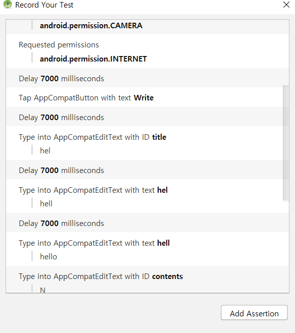
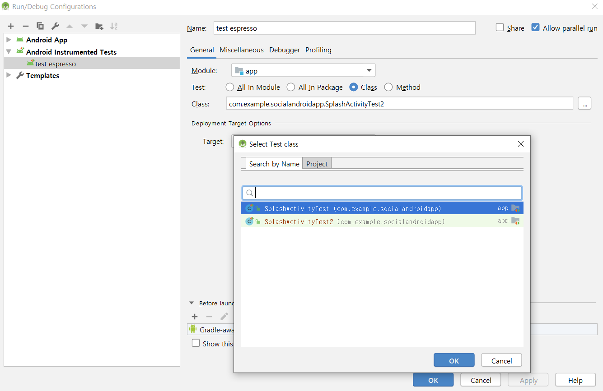
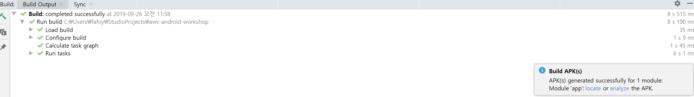
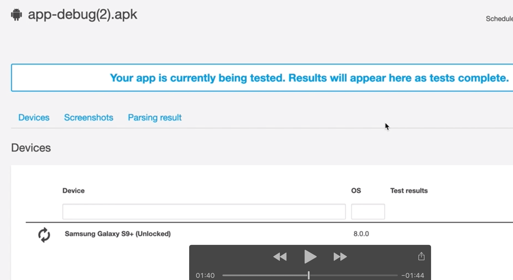

Espresso Framework 를 통해 필요한 절차지향적 테스트를 수행합니다.
⦁ Built-in Espresso test ⦁ Espresso는 기본적으로 내재되어있는 Android Test support library를 기반으로 합니다. Android Studio에 기본 탑재되어있는 Espresso Test Recoder를 통해 간편하게 원하는 순차형식으로 테스트 프리셋을 구성 하실 수 있으며, 이것을 이용하여 Device Farm에서 개발자의 의도대로 앱을 테스트 해 볼 수 있습니다.
⦁ Android studio로 돌아와서 메뉴 바에서 Run > Record Espresso Test를 선택합니다. ⦁ 앱을 실행 할 때와 마찬가지로 AVD를 선택하는 팝업이 뜨게 됩니다. 앞서 설정했던 디바이스를 선택하고 OK를 누릅니다. ⦁ Record Your Test팝업 창과 더불어 AVD실행 화면이 뜨게 됩니다. 이때 앱 화면에서 동작하는 순서대로 오른쪽 Record List에 기록되게 됩니다. * Add Assertion 기능은 해당 뷰나 텍스트, 화면이 존재하는지 안하는지 확인하는 절차 기능입니다.
⦁ 예제에서는 ID admin, PASSWORD에 test입력 -> 버튼 1클릭->버튼2클릭-> POLLYDEMO선택 ->Polly화면에서 test입력후 Read 버튼 선택 -> 뒤로가기 후 종료되는 시나리오로 구성 해 보았습니다.

⦁ 테스트를 구성 후 OK버튼을 눌러 테스트 코드를 저장합니다. 이름은 Default값으로 진행하겠습니다. ⦁ 메뉴에서 다시 Build > Rebuild Project를 진행하고, Build메뉴의 Build APK(s)를 실행해서 APK를 생성합니다.
⦁ Espresso Test 로컬 AVD로 실행해보기 ⦁ 우선 로컬에서 Espresso를 통한 순차테스트를 진행해 보겠습니다. 상단 아이콘에서 Edit Confgurations를 선택합니다.
⦁ Run/Debug Configuraions 팝업에서 Android Instrumented Tests를 선택해서 추가합니다. ⦁ 해당 아이템에서 Name을 지정하고, General 탭의 Module에서 app을 선택합니다. Test항목에서 All in Package를 선택합니다.
⦁ package에서 해당 앱 패키지를 선택합니다.
⦁ Prefer Android Virtual Device 항목에서 이전에 생성해둔 AVD를 선택합니다. 그런다음 OK를 누르면 테스트 환경 설정이 완료됩니다.

⦁ 이제 상단의 Run 메뉴를 확인해 보면 아까 추가했던 테스트 환경구성이 보일 것입니다. 환경구성을 선택하고 Run하게 되면, 기존의 앱을 AVD로 실행하던 것과 같이 디바이스가 실행되고 난 후, 앱이 실행되면 아까 기록했던 동작들을 차례로 수행하게 됩니다
⦁ Run Console을 확인해보면, 성공적으로 테스트를 수행 후 Tests ran to completion. 이라는 메세지를 확인 할 수 있습니다.
v
⦁ 이로써 Built-in test framework인 espresso를 설정하고, 이를 통해서 로컬 AVD에서 테스트를 수행 해 보았습니다. 다음 챕터에서는 Device farm을 통해 espresso 테스트를 수행하고 결과를 모니터링 해 보겠습니다.
⦁ Device Farm을 통한 Espresso Test 실행 및 결과 모니터링 ⦁ 전반적인 절차는 앞서 시행했던 Fuzz 테스트와 비슷합니다. Device Farm 콘솔로 다시 와서 Fuzz를 실행했던 프로젝트 목록에서 +Create a new project를 선택합니다. ⦁ +Create a new run을 선택합니다.
⦁ Choose application 단계에서 안드로이드/애플 을 선택해주세요. ⦁ Upload 버튼에서 빌드된 Apk를 업로드 하거나, 앞서 업로드 했던 리스트에서 선택합니다. Next step으로 다음으로 진행합니다.
⦁ Configure your test설정 화면에서 Test유형을 Instrumentation으로 설정합니다.
⦁ 이제 Espresso로 생성된 instrumentation test를 업로드 해야 합니다. 일반적은 테스트 패키지의 경로는 프로젝트명/ /app/build/outputs/apk/androidTest/debug/app-debug-androidTest.apk에 빌드되어 있습니다. 혹은 해당위치가 없거나 잘 모르시겠다면 이전 단계 로컬 테스트에서 출력되는 내용에 해당 경로에 대한 내용이 있으니 참고하시면 됩니다. * 하단의 Advanced Configuration (optional)은 테스트에 대한 비디오 기록 및 App Performance 데이터에 대한 모니터링 여부를 위한 것입니다. Default로 두시면 됩니다.

⦁ 업로드가 완료되면 Test instrumentation에 대한 정보가 표출됩니다. 기본 패키지에 대한 도메인 정보와, Runner에 대한 정보가 표시됩니다. 여기서는 espresso가 junit기반이므로 AndroidJUnitRunner로 표시됩니다. 하단의 Test filter에 대한 enviroment설정은 그대로 두고 Next step으로 진행합니다. ⦁ Select devices에는 기존 Fuzz테스트와 마찬가지로 Top Devices로 설정하겠습니다. 때에 따라서 원하는 기종으로 구성하시거나 테스트시간을 단축하고자 한다면, 몇개의 기종으로 테스트를 하신다면 좋을 것입니다. 각 기종에 대한 해당 테스트 앱 패키지의 호환성을 체크하고, Next step으로 진행합니다. ⦁ Sepecify device state는 default로 진행합니다. 혹여 테스트 상에 한글에 대한 호환성이 필요하시면 Device locale에 Korean (ko_KR)로 설정합니다. 다음 단계로 진행합니다.
⦁ 테스트 진행에 대한 Summery를 보실 수 있으며, Execution timeout에서 MAXIMUM MINUTES PER DEVICE를 5분으로 설정합니다. Confirm and start run을 실행 해 줍니다. ⦁ 이제 Run list에 해당 테스트 작업이 진행되고, 평균 10분내외에 작업이 완료됩니다.

⦁ Devices 목록에서 상세를 보시면 로컬에서 실행했던 순차 테스트 그대로 돌아가는 모습을 확인 할 수 있습니다.